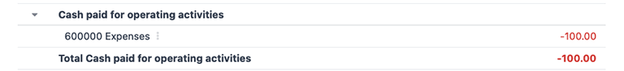
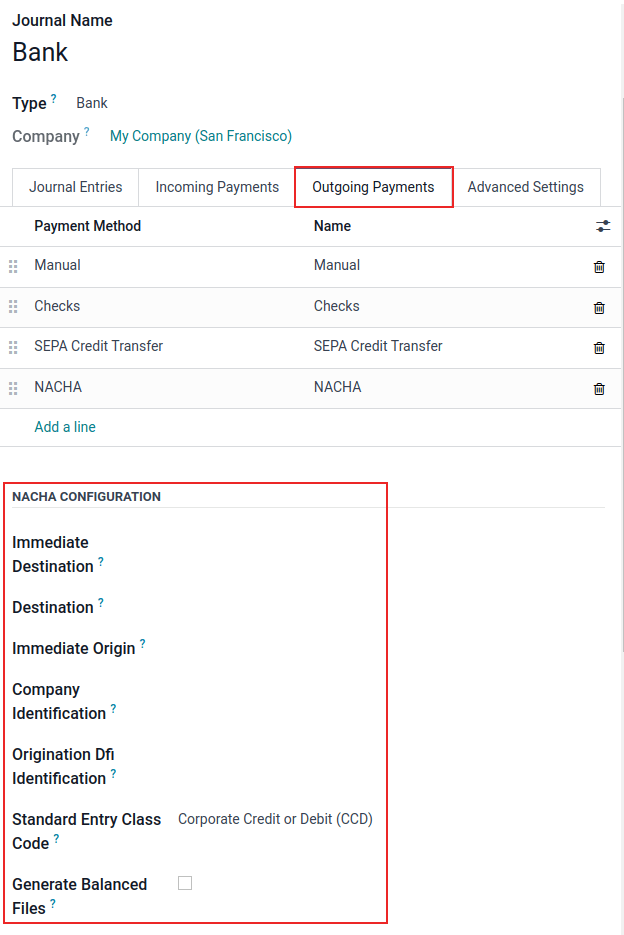

United States
The Odoo fiscal localization package for the United States follows the Generally Acceptable Accounting Principles (GAAP) accounting standards and rules used to prepare financial statements, as outlined by the Financial Accounting Standards Board (FASB) and adopted by the Securities and Exchange Commission (SEC).
In addition, a series of videos on the subject of Accounting are available through Odoos eLearning platform. These videos cover how to start from scratch, set up configurations, complete common workflows, and provide in-depth looks at some specific use cases, as well.
Configuration
Below are the available modules in Odoo for accounting use in the United States.
Note
The modules listed below are either for reference only or are optional, as the core requirements to operate under the US fiscal localization in Odoo are already included under the default package that came installed during database initialization.
Verify the default package is in use by navigating to and under the Fiscal Localization section at the top, look for the Generic
Chart Template selection to be listed next to the Package field label. This chart
template includes the necessary settings for the US localization for the Odoo Accounting app.

Modules installation
Install the following modules to get all the features of the United States localization:
Name |
Technical name |
Description |
|---|---|---|
United States - Accounting |
|
Base accounting module for United States localization. |
|
Adds United States accounting reports. |
|
US Checks Layout |
|
Enables the printing of payments on pre-printed check paper. Supports the three most common check formats and will work out of the box with the linked checks from checkdepot.net. |
|
Export payments as NACHA files for use in the United States. |
|
|
Export 1099 data for e-filing with a 3rd party. |
|
|
Module for the AvaTax integration with Odoo. |
|
|
Includes the necessary rules for United States payroll, including:
|
|
|
Contains the necessary accounting data for the United States payroll rules. |
|
|
Export Work Entries to the ADP payroll software. |
Chart of accounts
The chart of accounts (COA) for the United States localization, in Odoo, follows the standard GAAP structure, with accounts grouped into seven main categories, with corresponding numeric values that prefix individual journal entries:
Receivable: the balance of money (or credit) due to the business for goods or services delivered or used, but not yet paid for by customers. AR is indicated by the journal code labeled (or beginning) with 1.
Payable: the businesss short-term obligations owed to its creditors or suppliers, which have not yet been paid. AP is indicated by the journal code labeled (or beginning) with 2.
Equity: the amount of money that would be returned to a companys shareholders if all of the assets were liquidated and all of the companys debt was paid off in the case of liquidation. Equity is indicated by the journal code labeled (or beginning) with 3 or 9.
Assets: items listed on the balance sheet that contains economic value or have the ability to generate cash flows in the future, such as a piece of machinery, a financial security, or a patent. Assets are indicated by the journal code labeled (or beginning) with 1.
Liability: refers to a companys financial debts or obligations that arise during the course of business operations. Liabilities are indicated by the journal code labeled (or beginning) with 2.
Income: synonymous with net income, this is the profit a company retains after paying off all relevant expenses from sales revenue earned. Income is indicated by the journal code labeled (or beginning) with 4 or 6.
Expenses: the cost of operations that a company incurs to generate revenue. Expenses are indicated by the journal code labeled (or beginning) with a 6.
Tip
Predefined accounts are included in Odoo, as part of the CoA thats installed with the US localization package. The accounts listed below are preconfigured to perform certain operations within Odoo. It is recommended to not delete these accounts; however, if changes are needed, rename the accounts instead.
Type |
Account Name |
|---|---|
Current Assets |
Bank Suspense Account
Outstanding Receipts
Outstanding Payments
Liquidity Transfer
Stock Valuation
Stock Interim (Received)
Stock Interim (Delivered)
Cost of Production
|
Income |
Foreign Exchange Gain
Cash Difference Gain
Cash Discount Gain
|
Expenses |
Cash Discount Loss
Foreign Exchange Loss
Cash Difference Loss
|
Current Year Earnings |
Undistributed Profits/Losses |
Receivable |
Account Receivable |
Payable |
Account Payable |
See also
View, edit, and sort accounts
Access the Chart of Accounts dashboard in Odoo by navigating to .
From the Chart of Accounts dashboard, create new accounts by clicking the purple New button in the top-left corner of the dashboard and filling in the corresponding form. Search and sort through existing accounts by using specific Filters and Group By criteria, which are available in the mega menu under the Search bar.
To filter accounts by category, click the (caret down) icon to access the mega menu and look under the Filters column for individual selections. Clicking on a specific category will only show accounts that match that particular filter.
To view all the available account types, remove all of the filters in the Search bar, and then click the (caret down) icon to access the mega menu. From there, select Account Type under the Group By column heading to list all of the account types in the table.

Besides structure, there are other key differences in the chart of accounts in the United States, compared to other countries:
Specificity: US GAAP often requires more detailed accounts compared to some other countries. This can include separate accounts for various types of revenue, expenses, and assets, providing more granular information in financial reports.
Regulatory Requirements: In the United States, there are specific regulatory requirements set by bodies such as the SEC for publicly traded companies. These requirements may influence the structure and content of the CoA to ensure compliance with reporting standards.
Industry Practices: Certain industries in the United States may have unique accounting requirements or specialized CoA structures. For example, financial institutions often have specific accounts related to loans, investments, and interest income.
Tax Considerations: The CoA may also reflect tax considerations, such as accounts for deductible expenses, deferred tax assets, and liabilities, to ensure compliance with tax laws and facilitate tax reporting.
These differences, ultimately, should be reflected in the CoA structure itself, with the addition of new accounts, as needed, in order to meet the demands of US accounting reporting requirements.
Taxes
In the United States, tax rates and what is considered taxable vary by jurisdiction. Default Sales and Purchase taxes are created automatically when the Odoo Accounting application is installed. To manage existing or configure additional taxes, navigate to .
AvaTax
Avalara AvaTax is a cloud-based tax calculation and compliance software that integrates with Odoo for the United States and Canadian accounting localizations. Integrating AvaTax with Odoo provides real-time and region-specific tax calculations when items are sold, purchased, and invoiced in the database.
Important
AvaTax is only available for integration with databases/companies that have locations in the United States and Canada. This means the fiscal position/country of a database can only be set to the United States or Canada. Reference this documentation for more information: Fiscal country.
See also
Refer to the documentation articles below to integrate and configure an AvaTax account with an Odoo database:
Avalaras support documents: About AvaTax
Reports
A number of report selections are readily available for the US localization, under the drop-down menu:
Balance Sheet: a snapshot of a companys financial position at a specific point in time, which contains an overview of a companys assets, liabilities, and equity.
Profit & Loss: otherwise known as a P&L statement or income statement, provides a summary of a companys revenues, expenses, and profits/losses over a given period of time.
Cash Flow Statement: shows how much cash and cash equivalents a company has received and spent in a given period.
Executive Summary: an overview report that covers the key performance indicators of a companys financial position, such as revenue, profit, and debt.
Tax Report: an official form filed for a tax authority that reports income, expenses, and other pertinent tax information. Tax reports allow taxpayers to calculate their tax liability, schedule tax payments, or request refunds for the overpayment of taxes. In Odoo, the tax report can be made monthly, every two months, quarterly, every 4 months, semi-annually, and annually.
Check Register: a report that displays cash transactions (regardless of the journal) with their running balance after the transaction. Only visible with the US - Accounting Reports (
l10n_us_reports) module installed.1099 Report: a CSV download of payments made to non-employees in a period to file electronically in a third-party service. Only visible with the 1099 Reporting (
l10n_us_1099) module installed.
Depending on the type of report, certain filters are available at the top of the dashboard:
a date filter, indicated by a (calendar) icon that precedes a date in MM/DD/YYYY format. Use this to select a specific date or date range for the report.
a Comparison filter, to compare reporting periods against each other
a journal filter, as indicated by a (book) icon and the default setting of All Journals. Use this filter to specify which journals should be included in the report.
an entries type filter, as indicated by a (filter) icon, with the default setting of Posted Entries Only, Accrual Basis. Use this filter to determine which type of journal entries should be included in the report (e.g. posted or draft), along with the type of accounting method (e.g. accrual or cash basis).
There are view options in this filter, as well, one that will Hide lines at 0 for more relevant viewing, along with a Split Horizontally option to keep the report above the screens fold, removing the need to scroll.

a decimal filter, that by default, includes figures with cents, as indicated by the In .$ setting. Use the other options in the drop-down menu to change figures in the report to whole numbers (In $), thousands (In K$), or millions (In M$) formats.
a report customization filter, indicated by the (gears) icon. Use this filter to customize the current reports sections and line items, or build new reports, as desired.
1099 report
The 1099 report, available by installing the 1099 Reporting
(l10n_us_1099) module, includes payments that are made to non-employees across a given reporting
period. Use the available CSV download from the report in Odoo to file 1099 payments electronically
via a third-party service.
To generate a 1099 report, navigate to to open a 1099 Report wizard.
First, enter the date range of the transactions to report in the Start Date and End Date fields.
Then, edit the journal items that appear on the wizard. Click Add a line to add any items that are missing. Be sure to remove any items that should not be included in the report by clicking (delete) on the row.
Finally, once all necessary items are included in the 1099 report, click on the Generate button. Doing so, downloads a CSV file that groups transactions by the partner that received the payments.
Cash flow statement
Navigate to the Cash Flow Statement (CFS) dashboard by going to . From here, CFS reports can be generated using the various filters that are available at the top of the dashboard.
Odoo uses the direct cash flow method to compile cash flow statements, which measures actual cash inflows and outflows from the companys operations, such as when cash is received from customers or when cash payments are made to suppliers.
By default, an account labeled with any of the three default Tags on the Chart of Accounts dashboard will be included in the report, which includes: Operating Activities, Financing Activities, and Investing & Extraordinary Activities.

Additionally, the cash flow statement in Odoo:
is limited to the Bank and Cash journals to reflect money coming in or out; and
also contains Expenses accounts, to show the counterpart transactions versus Bank or Cash journal entries, while excluding AR and AP activity.
Example
Create a vendor bill for $100, as an operating expense (not AP). Doing so will not reflect a transaction on the cash flow statement. However, register a corresponding payment for $100, and the transaction will reflect on the cash flow statement as Cash paid for operating activities.
Cash discount
Cash discounts can be configured from . Each payment term can be set up with a cash discount and reduced tax.
See also
Writing checks
Using checks is still a common payment practice in the US. Be sure the US Checks Layout
(l10n_us_check_printing) module for the US localization is installed.
To enable check printing from Odoo, navigate to and find the Vendor Payments section. From here, tick the Checks checkbox to reveal several fields for check configuration.
Select a Check Layout from the drop-down menu:
Print Check (Top) - US
Print Check (Middle) - US
Print Check (Bottom) - US
Next, choose whether or not to enable the Multi-Pages Check Stub checkbox.
Optionally set a Check Top Margin and Check Left Margin, if required.
Once all check configurations are complete, Save the settings.
Tip
Some of the check formats may require pre-printed paper from a third party vendor, https://checkdepot.net/collections/odoo-checks is recommended.
See also
Payroll
The Payroll application is responsible for calculating an employees pay, taking into account all work, vacation, and sick time, benefits, and deductions. The Payroll app pulls information from the Attendances, Timesheets, Time Off, Employees and Expenses applications, to calculate the worked hours and compensation for each employee.
When using an external payroll provider, such as ADP, it is necessary to export the various payroll-related data, such as work entries, repayment of expenses, taxes, commissions, and any other relevant data, so the data can be uploaded into the payroll provider, who then issues the actual paychecks or directly deposits the funds into an employees bank account.
In order to export the payroll data, the work entries must first be validated and correct. Refer to the work entries documentation for more information regarding validating work entries.
Once work entries are validated, the information can be exported to ADP.
After payments have been issued to employees, payslips can be processed into batches, validated, and posted to the corresponding accounting journals to keep all financial records in Odoo current.
Required information
It is important to have the Employees application installed, and all employee information populated. Several fields in both the employee records, as well as in an employee contracts, are necessary to properly process the employees pay. Ensure the following fields are filled out in their respective places.
Employee records
In each employee record, there is various information the Payroll application requires to properly process payslips, including various banking, tax, and work information.
Navigate to the and select an employee record to view the sections of the employee form that directly affect Payroll:
Work Information tab:
Work Address: indicates where the employee is located, including the state, which affects the tax calculations.
Working Hours: determines how pay is calculated, and determines if an employee earns overtime.
Private Information tab:
SSN No: the last four digits of the employees Social Security Number (SSN) appears on payslips.
Bank Account Number: the bank account associated with the NACHA payment file.
HR Settings tab:
Federal Tax Filing Status: the tax status an employee uses for Payroll tax calculations, which can be different from their state status.
State Tax Filing Status: the tax status an employee uses for their state portion of the Payroll tax calculation.
W-2 Form: a US tax form indicating the summary of wages, taxes, and benefits paid to an employee during a tax period (typically one year).
W-4 Form: an IRS form that helps outline the amount of federal taxes to withhold for an employee, which is paid to the IRS by the company.
Employee contracts
Additionally, there is information that is found in an employee contract that also affects the Payroll application.
Navigate to the and select a contract record to view the sections of a contract that directly affect Payroll:
General Information:
Salary Structure Type: United States: Employee: defines when the employee is paid, their working schedule, and the work entry type.
Work Entry source: determines how work entries are calculated.
Salary Information tab:
SSN No: the last four digits of the employees Social Security Number (SSN) appears on payslips.
Wage type: determines how the employee is paid, wether a Fixed wage (salary) or Hourly wage.
Schedule Pay: defines how often the employee is paid, either Annually, Semi-annually, Quarterly, Bi-monthly, Monthly, Semi-monthly, Bi-weekly, Weekly, or Daily. In the US, Semi-monthly (24 payments a year) or bi-weekly (26 payments a year) are the most common.
Wage, Yearly, and Monthly cost: used to show the total cost of an employee. It is recommended to populate the Yearly wage first, as it auto-populates the other fields.
Pre-tax benefits: populate this section according to the employees selections. Pre-tax benefits decrease the gross wage, which lowers the base amount that is taxed. These are displayed at the beginning of the payslip.
Post-tax benefits: these benefits are deductions made after taxes are calculated. These appear towards the end of the payslip before the net amount is displayed.
See also
Export work entries to ADP
Requirements
In order to create a report that can be uploaded to ADP, there are some initial configuration steps that must be completed first.
First, ensure the United States - Payroll - Export to ADP (l10n_us_hr_payroll_adp) module is
installed.
Then, the company must have an ADP Code entered in the company settings. To do so, navigate to . Enter the ADP Code in the US Localization section.
Next, work entry types must have the correct ADP code listed in the External Code field for each work entry type that is being referenced.
Lastly, every employee must have an ADP Code entered on their employee form. To do so, navigate to , select an employee record, and open the HR Settings tab. Enter the ADP Code in the ADP Information section.
The ADP Code code is how ADP identifies that particular employee, and is typically a six-digit number.
See also
Export data
Once work entries have been verified, the information can be exported to a CSV file, which can then be uploaded into ADP.
To export the data, navigate to , then click New. Next, enter the Start Date and End Date for the work entries using the calendar pop-over.
Then, enter a Batch ID in the corresponding field. The recommendation for this field is
to enter the date in a YY-MM-DD format, followed by any other characters to distinguish that
specific batch, such as a department name, or any other defining characteristics for the batch.
Enter a Batch Description in the corresponding field. This should be short and descriptive, but distinct from the Batch Name.
Ensure the correct company populates the Company field. Change the selected company with the drop-down menu, if needed.
Lastly, add the employees work entry information to the list. Click Add a line and an Add: Employee pop-up window loads. The list can be filtered to more easily find the employees to add to the list.
Tip
Process the data export in multiple groups instead of in one large group that contains all employees. This helps to meaningfully differentiate the batches and makes processing more tenable, overall. The most common ways to group employees is by department, or by wage type (hourly or salaried).
Select the employees to add to the list by ticking the box to the left of their name. Once all desired employees have been selected, click the Select button in the lower-left corner, and the employees appear in the list.
To create the CSV file, click the Generate button in the top-left corner.
ACH - electronic transfers
Automated Clearing House (ACH) payments are a modern way to transfer funds electronically between bank accounts, replacing traditional paper-based methods. ACH payments are commonly used for direct deposits, bill payments, and business transactions.
Receive ACH payments: payment provider integration
ACH payments are supported by Authorize.net and Stripe payment integrations in Odoo.
Send payments: NACHA files
Odoo can generate a National Automated Clearing House Association (NACHA) compatible ACH file to send to a companys bank. For each individual Bank journal that the company wishes to pay vendors with, a NACHA configuration section needs to be filled out on the Odoo database.
Configuration
First, navigate to the . Open the bank journal and click into the Outgoing Payments tab.
Note
The following NACHA configuration information is normally provided by the companys financial institution once they have been approved to send payments via their account.
Under the section labeled, NACHA configuration are the fields required to generate a NACHA compatible ACH file to send to a companys bank. First, enter the routing number of the financial institution in the field labeled, Immediate Destination. This information is widely available on the Internet and generally varies by bank location. This number is usually provided during the initial account setup.
Next, enter the registered name of the financial institution in the field called, Destination. This information will be provided by the bank or credit union.
Following the Destination field is the Immediate Origin field. Enter the 9-digit company ID or Employer Identification Number (EIN) into this field. This information is provided by the financial institution.
Next, enter the Company Identification number, which is a 10-digit number made from
combining the 9-digit company ID or Employer Identification Number (EIN), along with an additional
number at the start of the sequence. This number is often a 1. Check with the financial
institution should this first number differ to verify that it is correct, as this number is provided
for ACH approved accounts.
Enter the Originating DFI Identification number next, which should contain an assigned 8-digit number from the financial institution.
Important
Enter the numerical values in this section exactly as the companys financial institution (e.g. bank or credit union) has provided them, otherwise risk failing a successful NACHA configuration in Odoo.
There are two options for the next field: Standard Entry Class Code. Select the drop-down menu to the right of the field and pick either Corporate Credit or Debit (CCD) or Prearranged Payment and Deposit (PPD). Again, this information will be provided by the financial institution. By default Corporate Credit or Debit (CCD) is selected.
Finally, the last option is for Generated Balanced Files. Tick the checkbox to the right of the field to enable Generated Balanced Files. Consult the companys accountant or financial advisor to make an informed decision for this field.
Manually save the configuration by clicking the (cloud upload) icon, or navigate away from this screen to auto-save. The configuration is now complete.
Create batch payment
Now, record each payment in Odoo using the NACHA payment method.
See also
Important
Be aware of the cut-off time for same-day payments. Either the file needs to have a future date associated with each payment or the file needs to be sent prior to the cut-off, if the dates included in it match todays date. Consult the financial institution for the exact cut-off time for their processing of same-day payments.
Once all the payments to be included in the NACHA ACH file have been made, a batch payment needs to be made from the Action menu.
To create the batch payments, access the payments page, by navigating to . Select all the payments that should be included in the NACHA ACH file, by ticking the checkboxes to the far-left of the rows.

Warning
All payments in the batch must share the same payment method.
Next, navigate to the batched payment (). Click into the payment just created and then click into the Exported File tab. The generated file is listed with the Generation Date. Click the (download) button to download the file.

If any adjustments need to be made, click the Re-generate Export File button to recreate a new NACHA ACH file.